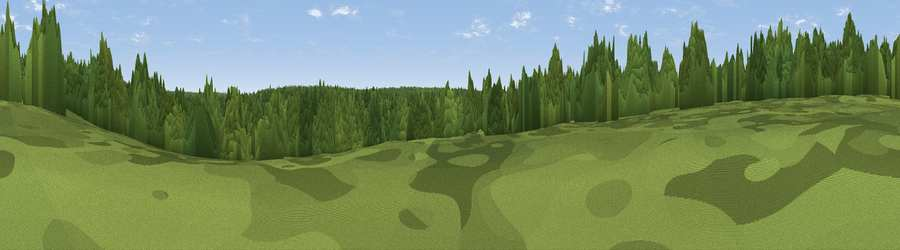

Viewpoint near Brandon
#46358 in England · top 100% of its area beats it · near BrandonThe view, rendered

A 360° render of this exact spot computed from the terrain model, tree cover and land cover — summer colours, afternoon light, calibrated against photographs of famous viewpoints. Real trees, hedges and buildings will differ in detail.
The panorama
Grey silhouette: terrain skyline in each direction (720 bearings, Earth curvature and refraction included). Dashed green: skyline with trees (+15 m) and buildings (+8 m) as obstacles. Blue strip: how far the ground is visible on each bearing.
Where the view opens
Wedge length = distance to the farthest visible ground on that bearing (vegetation-aware). Rings at 10, 25 and 50 km.
What fills the view
94% woodland · 4% grassland · 1% built-up
Angular shares of the visible panorama (visual magnitude), not map area. Landscape diversity 0.11 (0–1 Shannon).
Key numbers
More beautiful places nearby
The staircase of upgrades: each row has a higher view potential than everything closer. Driving times are estimates from straight-line distance, calibrated against real road routing — check an actual route before setting out.
| Place | Direction | Drive | Score |
|---|---|---|---|
| Thetford Forest interior (Fire Road 12, Santon Downham) | SSE · 3 km | ~8 min | 13.2 |
| Viewpoint near Croxton | E · 4 km | ~9 min | 15.4 |
| RAF Lakenheath Viewing Area | SW · 6 km | ~14 min | 18.3 |
| Washland Viewpoint | W · 8 km | ~17 min | 26.6 |
| New Fen viewpoint | W · 9 km | ~18 min | 27.4 |
| Joist Fen viewpoint | W · 11 km | ~20 min | 29.5 |
| Dunham Lodge | NNE · 26 km | ~42 min | 30.2 |
| Mill Mound | WSW · 26 km | ~42 min | 30.9 |
52.45828, 0.65059 · source: osm viewpoint · position refined by local search. Computed location — check access rights before visiting.